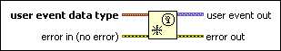

Create User Event Function
Owning Palette: Events Functions
Requires: Base Development System
Returns a reference to a user event. LabVIEW uses the user event data type you wire to determine the event name and data type of the event. Wire the user event out output to a Register For Events function to register for the event. Wire the user event out output to a Generate User Event function to send the event and associated data to all Event structures registered for the event.

 Add to the block diagram Add to the block diagram |
 Find on the palette Find on the palette |